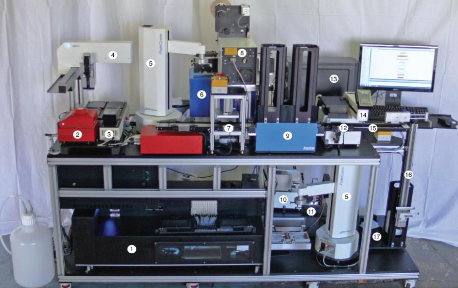
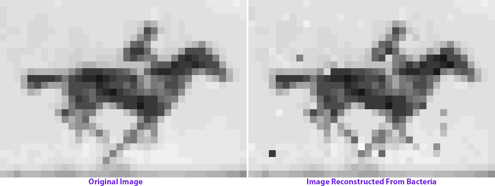

Chemlambda for the people
(click on the screen to continue)
"still he'd see the matrix in his sleep, bright lattices of logic unfolding across that colorless void"
William Gibson, Neuromancer
"like making lists, just, fold up inside themselves. Come out the other way around. Crazy things."
Pseudo -- William Gibson

digital chemistry
to biological chemistry
and back
to biological chemistry
and back
and back
chemlambda
to biological chemistry
and back

digital chemistry
to biological chemistry?
and back
Continue to chemlambda.github.io